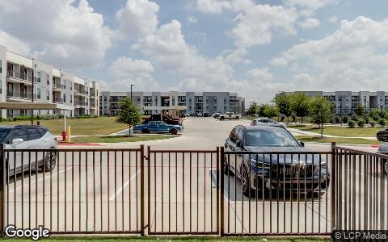
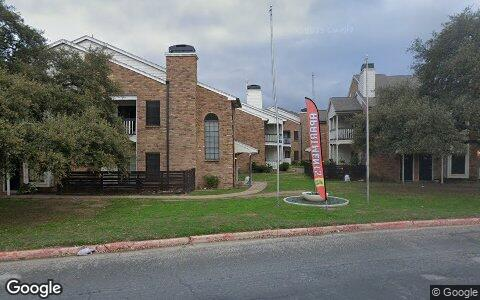

This Issue August 2026 edition
Flip exit prices absorbed the adjustment while acquisition pricing did not: resales cleared at $315,542 against a $408,018 investor purchase median
Flips sold at a median $315,542 this edition, down 12% from $359,100 a year ago, while the investor purchase median held at $408,018 against $405,583 a year ago. Volume moved the same way as price: 114 flips versus 187 a year ago and 160 in the prior period, a 39% year-over-year contraction that the buy side did not match at 1,086 purchases, down 14%. The pattern points to exit pricing carrying the adjustment while acquisition basis has not moved with it. Single-family accounted for 106 of the 114 flips, clearing at a median $322,529.
Investor Playbook
What this issue's numbers suggest checking, by investor type. Observations from recorded data — not investment, legal, or tax advice.
Pitch the ring to landlords, not to flippers underwriting last year's exit
Underwrite to a $315,542 exit and a six-month carry
Basis is where the advantage is; the metro median has not moved
The gap to fill is the repriced flip exit, not the acquisition
Land and small commercial carried the dollars while housing volume fell
Factoids
Numbers from this period a practitioner would repeat to a colleague. Each computed directly from recorded instruments.
89 builder new-build sales — Recorded builder sales at a $458,850 median
199 out-of-state purchases, 18% of the total — Out-of-state investor buys at a $463,957 median versus $389,025 for local buyers
1,415 landlords added 2,823 units — Local owners that grew their rental count since the prior data drop
$6,500 median profit per flip — Lifetime scorecard for the 8,559 local flippers on record across 25,036 flips
36 private loans recorded — Recorded private lending deals at a $260,900 median
Kyle 46 buys at a $276,806 median — Investor purchases in 78640 against Austin's 357 buys at a $720,000 median
Market Activity — Investor Purchases
Monthly count of investor purchases of MSA properties (left axis) and the median purchase price (right axis), trailing 13 months. The most recent month can grow up to ~15% as late recordings arrive.

Where the Money Went
The geography of the period's investor activity: which zip codes saw the most recorded deals, and the largest individual transactions at street level.
The 8 busiest zip codes for investor deals
| # | Zip | Area | Purchases | Flips | Median buy |
|---|---|---|---|---|---|
| #1 | 78640 | Kyle | 46 | 8 | $276,806 |
| #2 | 78628 | Georgetown West | 44 | 8 | $439,166 |
| #3 | 78602 | Bastrop | 48 | 3 | $200,032 |
| #4 | 78752 | Highland | 46 | 1 | $3.1M |
| #5 | 78745 | South Austin / Westgate | 38 | 6 | $473,480 |
| #6 | 78641 | Leander | 37 | 5 | $457,520 |
| #7 | 78634 | Hutto | 31 | 5 | $332,022 |
| #8 | 78621 | Elgin | 34 | 1 | $218,942 |
Largest recorded deals of the period, at street level



Deal sheet — largest recorded transactions
| Date | Type | Amount | Property | Use |
|---|---|---|---|---|
| May 19 | Flip | $2.4M | 8307 Silver Ridge Dr, Austin 78759 | Single family |
| Jun 16 | Flip | $1.4M | 4500 Jinx Ave, Austin 78745 | Single family |
| Jun 22 | New build | $2.6M | 15015 Oklahoma St, Austin 78734 | New construction |
| Jun 8 | Purchase | $95.1M | 13548 Section House Rd # A, Manchaca 78652 (2 parcels) | Agricultural |
| May 21 | Purchase | $58.4M | 1513 Sam Bass Rd, Round Rock 78681 | Industrial |
| Jun 23 | Private loan | $2.6M | 408 Sleat Dr, Spicewood 78669 (2 parcels) | Other land |
Largest flip margin deals of the period, at street level
Gross margin = recorded sale price minus the flipper's recorded purchase price. Purchase deeds are recoverable for roughly 4 in 10 flips; rehab and carry costs are not public record.


Market Pulse
| Attributed activity | Jun 2026 → Aug 2026 (2 mo) | per month | Feb 2026 → Jun 2026 · per mo | Jul 2025 → Feb 2026 · per mo |
|---|---|---|---|---|
| Flips completed | +321 | +161 | +229 | +523 |
| Net rental units added | +907 | +454 | +4,132 | −2,811 |
| Lending deals funded | +183 | +92 | +75 | +304 |
| Seller/notes held (net) | +617 | +309 | +18 | +953 |
| Investors (net) | +892 | +446 | +1,905 | −897 |
The pulse table attributes activity between data drops from upstream lifetime totals, so compare monthly rates rather than the raw totals of periods of unequal length. Flips completed ran 160.5 per month in the latest stretch against 228.75 per month in the prior one and 522.6 per month in the earliest, the same downshift the flip desk shows. Net rental units added slowed to 453.5 per month from 4,132, and net investors to 446 per month from 1,905, indicating the formation surge in the prior period has not repeated. Two lines went the other way: lending deals funded rose to 91.5 per month from 75.0, and seller or held notes to 308.5 per month from 17.75, which is worth watching against the thin recorded loan counts in the money desk. Recording lag of four to eight weeks applies throughout, and the most recent month can grow as late records arrive.